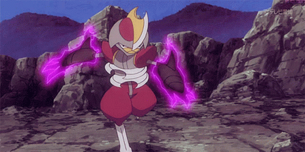

10° Lugar
Hariyama


Uma das caracteristicas que eu mais gosto do hariyama é a sua semelhança ao um lutador de sumô.Particulamente,eu sempre gosto de colocar ele na minha equipe no Pokémon Esmeralda, devido ao seu dano absurdo. ademais, esse pokémom consegue aprender Belly drum no nivel 26!!! isso é roubado pra caralho.
9° lugar
Bisharp

O que mais me chama atenção nesse pokémon é o seu designer fodão de samurai.No entanto, Esse pokémom não é só style, ele também é um bom pokémom por causa da sua habilidade defiant,seu elevado status de ataque e movimentos que ele aprende.